File: 000150.gt.txt (if the image is defective, simply delete all Arabic text and the line will be excluded)
سمي هذا اليوم يوم أغواث، وأكثر المسلمون القتل في الأعاجم، ولم تقاتل الأعاجم
File: 000151.gt.txt (if the image is defective, simply delete all Arabic text and the line will be excluded)
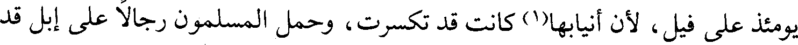
يومئذ على فيل، لأن أنيابها(1) كانت قد تكسرت، وحمل المسلمون رجالا على إبل قد
File: 000152.gt.txt (if the image is defective, simply delete all Arabic text and the line will be excluded)
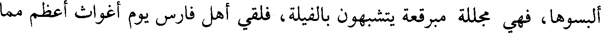
ألبسوها، فهي مجللة مبرقعة يتشبهون بالفيلة، فلقي أهل فارس يوم أغواث أعظم مما
File: 000153.gt.txt (if the image is defective, simply delete all Arabic text and the line will be excluded)
لقي المسلمون من الفيلة يوم أرماث، وجعل رجل من المسلمين يقال له: سواد يتعرض
File: 000154.gt.txt (if the image is defective, simply delete all Arabic text and the line will be excluded)
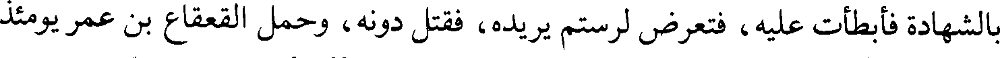
بالشهادة فأبطأت عليه، فتعرض لرستم يريده، فقتل دونه، وحمل القعقاع بن عمر يومئذ
File: 000155.gt.txt (if the image is defective, simply delete all Arabic text and the line will be excluded)
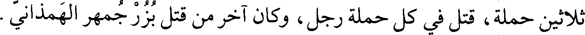
ثلاثين حملة، قتل في كل حملة رجل، وكان آخر من قتل بزرجمهر الهمذاني.
File: 000156.gt.txt (if the image is defective, simply delete all Arabic text and the line will be excluded)
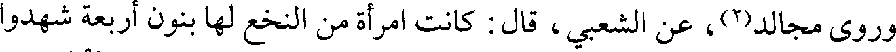
وروى مجالد(2)، عن الشعبي، قال: كانت امرأة من النخع لها بنون أربعة شهدوا
File: 000157.gt.txt (if the image is defective, simply delete all Arabic text and the line will be excluded)
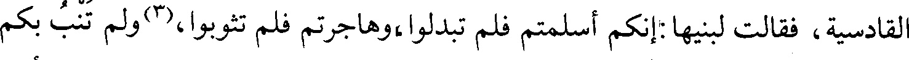
القادسية، فقالت لبنيها:إنكم أسلمتم فلم تبدلوا،وهاجرتم فلم تثوبوا،(3)ولم تنب بكم
File: 000158.gt.txt (if the image is defective, simply delete all Arabic text and the line will be excluded)
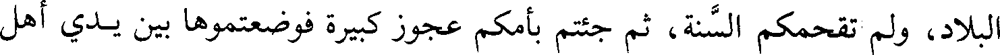
البلاد، ولم تقحمكم السنة، ثم جئتم بأمكم عجوز كبيرة فوضعتموها بين يدي أهل
File: 000159.gt.txt (if the image is defective, simply delete all Arabic text and the line will be excluded)
فارس؛ والله إنكم لبنو رجل واحد، كما أنكم بنو امرأة واحدة، ما خنت أباكم، ولا
File: 000160.gt.txt (if the image is defective, simply delete all Arabic text and the line will be excluded)
فضحت خالكم، إنطلقوا فاشهدوا أول القتال وآخره، فاقبلوا يشتدون؛ فلما غابوا عنها
File: 000161.gt.txt (if the image is defective, simply delete all Arabic text and the line will be excluded)
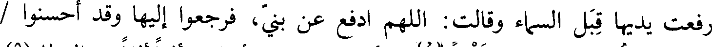
رفعت يديها قبل السماء وقالت:اللهم ادفع عن بني، فرجعوا إليها وقد أحسنوا /
File: 000162.gt.txt (if the image is defective, simply delete all Arabic text and the line will be excluded)
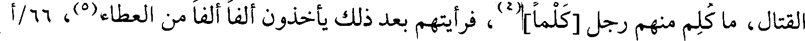
القتال، ما كلم منهم رجل [كلما](4)، فرأيتهم بعد ذلك يأخذون ألفا ألفا من العطاء(5)، 66/أ
File: 000163.gt.txt (if the image is defective, simply delete all Arabic text and the line will be excluded)
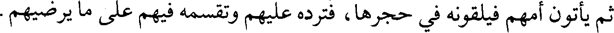
ثم يأتون أمهم فيلقونه في حجرها، فترده عليهم وتقسمه فيهم على ما يرضيهم.
File: 000164.gt.txt (if the image is defective, simply delete all Arabic text and the line will be excluded)
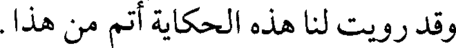
وقد رويت لنا هذه الحكاية أتم من هذا.
File: 000165.gt.txt (if the image is defective, simply delete all Arabic text and the line will be excluded)
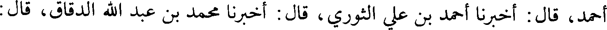
أحمد، قال: أخبرنا أحمد بن علي الثوري، قال: أخبرنا محمد بن عبد الله الدقاق، قال:
File: 000166.gt.txt (if the image is defective, simply delete all Arabic text and the line will be excluded)
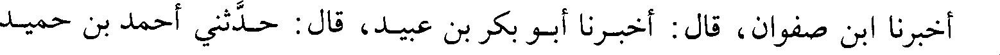
أخبرنا ابن صفوان، قال: أخبرنا أبو بكر بن عبيد، قال: حدثني أحمد بن حميد
File: 000167.gt.txt (if the image is defective, simply delete all Arabic text and the line will be excluded)
189
File: 000168.gt.txt (if the image is defective, simply delete all Arabic text and the line will be excluded)
File: 000169.gt.txt (if the image is defective, simply delete all Arabic text and the line will be excluded)
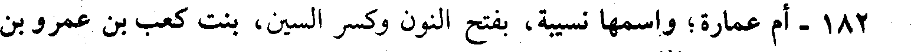
182 - أم عمارة؛ واسمها نسيبة، بفتح النون وكسر السين، بنت كعب بن عمرو بن
File: 000170.gt.txt (if the image is defective, simply delete all Arabic text and the line will be excluded)
عوف الأنصارية: (1)
File: 000171.gt.txt (if the image is defective, simply delete all Arabic text and the line will be excluded)
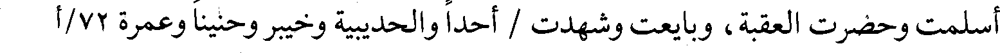
أسلمت وحضرت العقبة، وبايعت وشهدت / أحدا والحديبية وخيبر وحنينا وعمرة 72/أ
File: 000172.gt.txt (if the image is defective, simply delete all Arabic text and the line will be excluded)
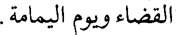
القضاء ويوم اليمامة.
File: 000173.gt.txt (if the image is defective, simply delete all Arabic text and the line will be excluded)
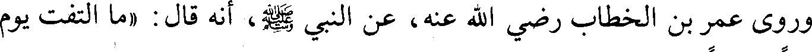
وروى عمر بن الخطاب رضي الله عنه، عن النبي صلعم، أنه قال: «ما التفت يوم
File: 000174.gt.txt (if the image is defective, simply delete all Arabic text and the line will be excluded)
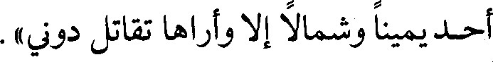
أحد يمينا وشمالا إلا وأراها تقاتل دوني».
File: 000175.gt.txt (if the image is defective, simply delete all Arabic text and the line will be excluded)
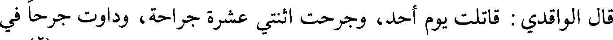
قال الواقدي: قاتلت يوم أحد، وجرحت اثنتي عشرة جراحة، وداوت جرحا في
File: 000176.gt.txt (if the image is defective, simply delete all Arabic text and the line will be excluded)
File: 000177.gt.txt (if the image is defective, simply delete all Arabic text and the line will be excluded)
استطاعت من نزف الدم، وخرجت مع المسلمين في قتال أهل الردة، فباشرت الحرب
File: 000178.gt.txt (if the image is defective, simply delete all Arabic text and the line will be excluded)
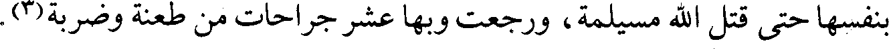
بنفسها حتى قتل الله مسيلمة، ورجعت وبها عشر جراحات من طعنة وضربة(3).
File: 000179.gt.txt (if the image is defective, simply delete all Arabic text and the line will be excluded)
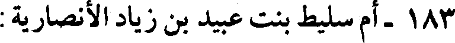
183- أم سليط بنت عبيد بن زياد الأنصارية :
To Save: `Ctrl+s`, make sure to choose `Webpage, complete`!